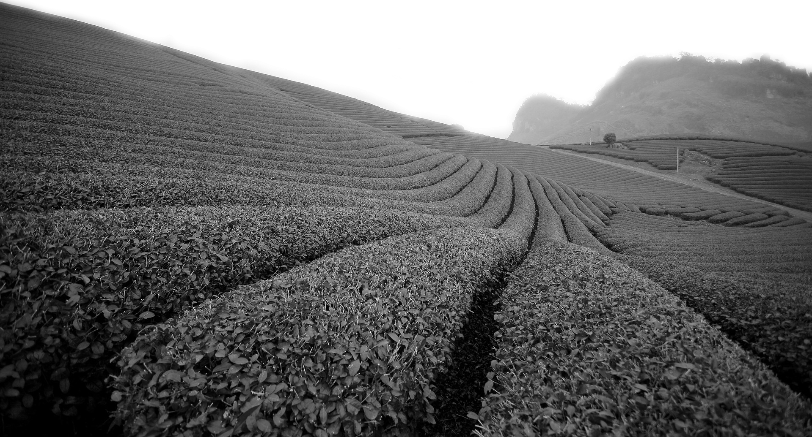

ყველაფერი ასე დაიწყო ...200 წლის წინ. გურიის სამთავროს უკანასკნელი მმართველი მამია V გურიელი (1809 – 1826) როგორც რეფორმატორი გახლდათ, მისი მმართველობის პერიოდს მრავალი სიახლე უკავშირდება, მათ შორის სოფლის მეურნეობის სექტორის გარდაქმნა და განვითარება. მამია V გურიელი დაუკავშირდა ფრანგ ბოტანიკოსებს ანდრე მიშოსა და მისი ვაჟს ფრანსუა ანდრე მიშოს, რომლებმაც 1799 წელს პირველად ჩაიტანეს და გააშენეს ჩაის ბუჩქი ამერიკის შეერთებულ შტატებში.
მათი რეკომენდაციით მან პირველი ჩაის ნერგები გამოიწერა საქართველოში და შოტლანდიელი იაკობ მონტეგიუ მარის დახმარებით, სხვა ეგზოტიკურ მცენარეებთან ერთად პირველი ჩაის ბუჩქი გაშენდა მთავრის ბოტანიკურ ბაღში. ერთ დროს უცნობი მცენარის მოყვანამ საფუძველი ჩაუყარა იმას, რაც მომდევნო ათწლეულებში საქართველოს ყველაზე დიდ სასოფლო მეურნეობად იქცა. მე-19 საუკუნის მეორე ნახევარში ჩაის ბუჩქების გაშენება გურიას გასცდა და პრაქტიკულად დასავლეთ საქართველოს ყველა რეგიონში გავრცელდა: აფხაზეთში, აჭარაში, იმერეთსა და სამეგრელოში.
1861 წელს პირველი ქართული „ბაიხის“ ჩაი დამზადდა, 1864-ში, პროდუქტი სასოფლო-სამეურნეო გამოფენაზე წარადგინეს, ხოლო 1885 წელს, პირველი საექსპორტო გადაზიდვა განხორციელდა ევროპაში.
1980-იან წლებში ქართული ჩაის ინდუსტრიაში 190 ათასი ადამიანი იყო დასაქმებული, არსებობდა 70 ათასი ჰექტარზე გაშენებული ჩაის პლანტაციები, 140 პირველადი წარმოების, 25 დაფასოებისა და 3 მექანიკური ქარხანა, ასევე რამდენიმე სამრეწველო ობიექტიც.
საქართველოში იწარმოებოდა 600 ათასი ტონა მწვანე ფოთოლი, ანუ 133 ათასი ტონა ჩაი, რამაც ჩვენ მეხუთე ყველა დიდი ჩაის მწარმოებელი ქვეყანა გაგვხადა ინდოეთის, ჩინეთის, იაპონიისა და შრი-ლანკის შემდეგ.
საქართველომ განსაკუთრებული როლი ითამაშა ჩაის გაშენების კვლევასა და განვითარებაში მთელი მსოფლიოს მასშტაბით. პირველად, სწორედ ქართველმა მეცნიერებმა დაამტკიცეს, განსაკუთრებული თვისებების მქონე ჩაის სელექციური ჯიშების გამოყვანის შესაძლებლობა. გენერაციული სელექციური გზით მათ 16-ზე მეტი ქართული სელექციური ჯიში გამოიყვანეს, რომლებიც ყინვაგამძლეობითა და მაღალი ეკონომიკური ეფექტიანობით ხასიათდება. საქართველოს ბუნებრივი კლიმატური პირობები განაპირობებს ქართული ჩაის უნიკალურ ხასიათს. პლანტაციები არ საჭიროებენ ჰერბიციდებისა და პესტიციდების გამოყენების გამოყენებას, შესაბამისად ჩვენი ჩაი არის ეკოლოგიურად სუფთა და გარემოს დაბინძურებაც მინიმუმამდეა დაყვანილი.
ჩვენი კომპანიის ნედლეულის ბაზა შეადგენს გურიის, სამეგრელოს და იმერეთის მთიანი ზონის 500ჰა-მდე ჩაის პლანტაცია, მათი ნაწილი ჯიშობრივი გაუმჯობესების შედეგად გამოყვანილი სელექციური პლანტაციებისაგან შესდგება. მთის სუფთა ჰაერი, კამკამა მდინარეები, მზიანი დღეების და ნალექის რაოდენობა, ასევე დღე-ღამური ტემპერატურის ცვლილებების ამპლიტუდა კი განაპირობებს არომატული, ეკოლოგიურად სუფთა ჩაის ნედლეულის მიღებას, საიდანაც გამომუშავებული პროდუქცია სასარგებლო თვისებებით, მაღალი ხარისხითა და არაჩვეულებრივი გემოთი გამოირჩევა. „გურიელის“ შექმნის იდეა 2008 წელს გაჩნდა, რასაც მოჰყვა ორი წლიანი ინტენსიური მუშაობა. 2010 წელი კი შემობრუნების წერტილი გახდა, არა მხოლოდ კომპანიისთვის, არამედ მთლიანად ჩაის ინდუსტრიისთვის საქართველოში. ამ წელს ჩაის ქართული ბრენდი „გურიელი“ წარსდგა ქართულ ბაზარზე.